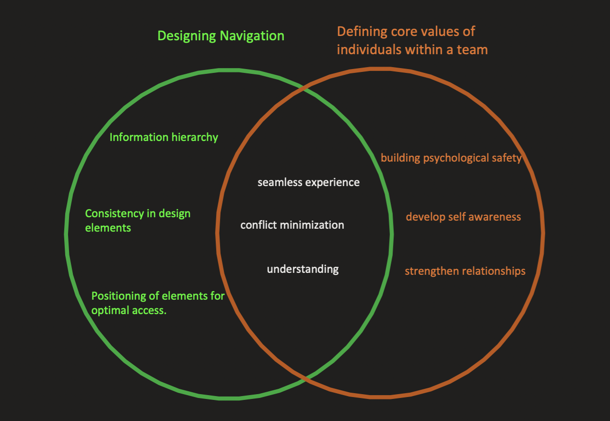

Both UI design and team dynamics in the workplace revolve around mutual understanding and
creating seamless experiences.
An intuitive UI ensures ease of use and diminishes user frustrations.
Similarly, in a team setting, understanding individual values aids in minimizing conflicts
and misunderstandings.
This alignment in principles demonstrates the interconnected nature of design thinking and
effective team
collaboration. As a future software engineer, grasping the overlap between UI design
principles and workplace values enhances an
engineer's holistic approach to development, emphasizing user experience and team harmony.
This understanding bridges technical expertise with interpersonal dynamics, fostering
effective solutions
and collaborative environments.
Krug, Steve., and Roger Black. Don’t Make Me Think! : a Common Sense Approach to Web
Usability. Que, 2000.
https://blog.colinbreck.com/understanding-our-core-values-an-exercise-for-individuals-and-teams/